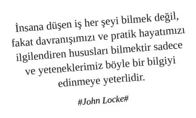

Neden Brainstorming?
Bireysel olarak kabız olmuş zihinler bir araya gelince fikir ishali olabildikleri için.
Doğru zamanda doğru fikir bulunmadığı takdirde profesyonel iş dünyasında, başarısızlık öncü sarsıntılarını deneyimlememek için.
Fikir bulunamama ve sıvama riskini dağıtıp ihtimali artırmak için.
İnsanlara kendini ispatlamayan egonun, iş akdinin feshi gündemde olduğu için.
Off-site mekân, yeme içme, goy goy altyapısının keyif maksimizasyonu için.
“Fikir aşamasında herkesi yalandan da olsa dahil edelim, herkesin çorbada tuzu olsun ki, sonradan kimse proje ile ilgili artistlik yapmasın” yaklaşımından dolayı.
Kreatif profesyonellerin beyinlerindeki adonisleri gösterebilmeleri için.
“Bu fikri / konsepti / brainstorming ile bulduk” demek çok havalı olduğu için.
İnsanlığın çözüm bulamadığı evrensel tüm sorunları çözebilme ihtimali için.
Brainstorming Ortamı
Katılımcıların yaratıcılığını artıracak, vizyonlarını açacak, gözlerine inmiş cehalet perdesini kaldıracak ortamlarda kişi, fikrinin efendisi olur.
Açık Hava Brainstorming Ortamları:
Deniz kenarı ve / veya 24’üncü kattan denizi ucundan gören bir ortam, fikir profesyoneline gerekli deniz motivasyonunu verir. Bir şekilde deniz gören yerde brainstorming yapmak çok profesyonelce durur ve bu brainstorming sonucunda çıkacak olan fikirlere çok güvenilir. Aynı zamanda bu tür bir ortam hatıra nev’inden ufka bakan stockphoto’lar çektirmek için de idealdir.
Buruna gelen deniz havasının zihin açıcı özelliği sayesinde en zorlu beyin lekeleri bile temizlenir. Lekeden, önyargıdan, değişime kapalılıktan iz kalmaz. Adeta mekân oynatır.
Kıdemli brainstorming katılımcısı, deniz ile gökyüzünün kesiştiği ufuk çizgisine bakarak yaratıcı fikir bulma öncesinde ısınma sürecini tamamlar. Ayrıca ufka bakarak uyuyan profesyoneller de vardır fakat burası yeri olmadığı için varlıklarından bahsedip geçiyoruz.
Orman hayvanlarını görmek, sevmek, onları ellemek; börtü böcek sesleri ile beynin fikir üretim sürecini senkron etmek; fikir üretim motorunu bayır aşağı vurdurup yeni ve özgün fikirlerin üretilmesine vesile olur.
Önemli bir nokta, brainstorming özünde bir sesli düşünce aktivitesidir, sesli düşünce ise kendi başına çok saçma bir hareket olacağından havalı bir şekilde yoğrulmaya ihtiyaç duyar duyar. Rüzgârın okşadığı insan tenindeki gözeneklere dolan oksijen, “Atıyom, şöyle bir şey...” diyen çene kaslarını çalıştırır.
Açık havada tüm ritüellerine uygun olarak yakılan kaliteli bir puro, profesyonel duruş şemsiyesi altında ortamın özgün ve nitelikli fikir üretim sürecini tetikler.
Deniz, orman gibi ortamlar haricinde denenen profesyonel hayata özgün brainstorming toplantı alanı arayışları bitmemiş ve hiç bitmeyecek bir çabanın sonucudur. Beyhude yere kürek çekmektir. Yine de bazı mekân önerilerimizi sayalım:
Lunaparkta Brainstorming
Oto Sanayide Brainstorming
Barda Brainstorming
Kıraathanede, kahvede Brainstorming
Teknede Brainstorming
Özel jette Brainstorming
Balonda Brainstorming
Uykulukçuda Brainstorming ve daha nice farklı mekân sizlerin tercihini bekliyor...
Kapalı Mekân Brainstorming Ortamları:
Dress code kapsamında: “Herkes üzerine rahat bir şeyler alsın” direktifi, brainstorming katılımcılarının zihinlerini ve hormonlarını toplantı başlamadan özgürleştirir.
Renkli eğrisel masalar ile oluşturulmuş olağandışı oturma düzenleri, ekibi doğru fikre götüren saha yayılımıdır. 3-5-2, 4-4-2, 4-3-3 her türlü çalışır.
Masaların üzerinde bulunan oyuncaklar (ışın kılıcı, lego, oyun hamuru, zekâ küpü, üstüpü, logar kapağı, yankeski vs), bulmacalar, karpuz kabukları gibi araçlar, fikir üretim aşamasında beynin farklı taraflarının çalıştırılmasına yardımcı olur.
Brainstorming toplantıları esnasında masalarda yer alan oyun hamurlarından spiral kaka modeli, çiçek, cevizli sucuk, çöp adam yapmak fikir üretim sürecinin kalitesini artırır, rengine renk katar.
Yazılabilir duvarlar çok önemlidir. Bu aynı zamanda milli bir travmanın da sona erdirilmesi için fırsattır. Çocukluğundan beri duvara yazı yazması engellenmiş Türk öğrencisi bu vesile ile kişisel gelişimini tamamlamış olgun bir birey olarak hayatına devam etme beratı almaya hak kazanır. Ayrıca internette gördüğümüz ve birbirimize forward edip durduğumuz Google, Intel gibi aşırı özgürlükçü ve esnek çalışma ortamlarının vazgeçilmezidir bu yazılabilir duvarlar. Yazarız, çizeriz, çocukluk hevesimizi alır ve bu iç huzuruyla beyin çağlayanlarına devam ederiz.
Kahvaltı ikramı (granola, dilimlenmiş ve arasında kaşar ve maydonoz olan simit, cookie, meyve, vb) sınırsız içecek ikramı (çay, filtre kahve, espresso, americano, meyve suları ve gazlı içecekler vs) fikir üretim esnasında şeker düştüğünde değerlendirilebilecek sınırsız tatlı ikramı, efsane bir öğle yemeği, karınlar kazındığında fikir ivmesi için ikindi sandviçleri (kepek ekmek arası domates-peynir) brainstorming sürecinin olmazsa olmazlarındandır.
Kapalı mekânlarda brainstorming konusu ile ilgili gerçekleştirilecek enstalasyon çalışmaları (genç odası, futbol sahası, formula 1 ortamı, metrobüs ortamı, çay ocağı ortamı vb) profesyonel duruşu ifade ettiği gibi katılımcıların da odaklı fikir üretme kalitesini arttırır.
Brainstorming Süreci
Brainstorming yapılacak konu belirlenir ve flipchart’lara yazılır. Flipchart önemli bir motivasyon aracıdır zira üzerine yazılanlar beyaz tahtaya yazılanlar gibi kolayca silinememekte, kalıcı mahiyet taşımaktadır. Bu da üzeri yazılı bir flipchart’ı brainstorming çıktıları arasında “Çalıştık olm, hayvan gibi fikir kastık” diyen ispat nesnesi kılmaktadır.
Seçilen konunun bütün katılımcılar tarafından doğru anlaşılması çok önemlidir. Sürecin başında daha konuyu bile anlamamış olmak ve sağına soluna eğilip soru sormak hiç profesyonel değildir. Bu süreçte soru sormak egoyu uçurumdan aşağı fütursuzca yuvarlamaktır. Bu nedenle seçilen konu açık ve kesin bir dille ifade edilir.
Gruptaki her üye sırayla söz alarak fikir belirtir. Her söz alışta sadece bir fikir açıklanır.
Katılımcı profesyonel sıranın kendisine gelmesini beklerken, takım arkadaşları tarafından ifade edilen fikirleri kesinlikle dinlemez. Sıra kendine geldiğinde fark yaratacak özgün bir fikri nasıl üreteceğine odaklanır. Bu şekilde takım arkadaşlarından birinin söylemiş olduğu fikirle pişti olma durumuna da sağdan yaklaşmış olunur.
En çok konuşmaya çalışan kişi / kişiler hakkında entegre eleştiri kampanyası organize edilir. “Olm herif sürekli kendini göstermeye çalışıyor. Söyledikleri de bir işe yarasa bari, tek yaptığı önplana çıkmak.”
Fikirler, kısa ve özlü olarak iletilir. Fikrini uzun uzun anlatan kişinin kapasite sorunu olduğu dedikodu gündemlerine BBM’den, WhatsApp’tan düşer. “Olm kapasiteli bir herif olsa iki kelime ile anlatır derdini. Kendi fikrine güvenmiyor, uzun uzun konuşuyor fikrin zayıflığını kamufle etmek için.”
İlgili konuda aklına bir fikir gelmeyen üye “pas” geçer. Pas geçmek hiç profesyonel bir duruş değildir. Başarılı bir profesyonel mutlaka kendisine sıra geldiğinde gerekli hazırlıkları yapmış olmalıdır.
İletilen bütün fikirler herkesin görebileceği bir yere kaydedilir. (Yazılabilen duvarlar, flipchart’lar, brainstorming yazılımı olan bir bilgisayar gibi.)
Her ne kadar fikirler belirtildiğinde üzerinde kesinlikle tartışılmaz dense de fikirler üzerine tartışmak, tartışmalarda önplana çıkmak, fikirleri challenge etmek profesyonel bir duruştur. İlerleyen adımlarda bu iş bir sidik yarışına dönecektir.
Bütün fikirler ortaya konduktan sonra (teorik olarak herkes pas geçince bu durum gerçekleşebilir ama pratikte zor gerçekleşen bir durumdur) ilk tur oylamaya geçilir. Fikirler tek tek oylanır, üyeler istedikleri her öneriye oy verebilirler. Oylama sürecinde kıl olunan kişi / kişilere dair manipülasyon yapmak iş dünyasında rekabetçi profesyonel ruhu temsil eder.
İlk tur oylama sonucu en çok oy alan öneriler işaretlenir ve bu fikirler üzerinde tartışılır. Yine tüm üyeler pas geçince ikinci tur oylamaya geçilir.
İkinci tur oylamada üyeler sadece bir öneriye oy verebilir. Bu oylama sonucunda öneriler önem sırasına göre belirlenmiş olur.
Böylece evrenin sırrı ortaya çıkar.
Brainstorming Söylemleri
“Atıyorum, şöyle bir şey olsa, yıkılmaz mıydı?”
“Peki, bir de şu açıdan baksak?”
“Aynen, benim de aklıma gelmişti.”
“Bence aynı noktada takıldık kaldık. Biraz zoom out edip, resmin geneline bakmak gerek.”
“O fikri bi ebem yapmadı?”
“Bence ayakların yere basmadan konuşuyorsun.”
“Recep’in X fikri bende Y çağrışımını yaptı. Peki, Y fikri ile dünyayı kurtarabilir miyiz?”
“Çok saçma bişi söylüyorum farkındayım ama...”
“Söyleyeceğimden dolayı bana yuh diyeceksiniz ama...”
“Böyle bir kafaya gidersek halktan çok kopmuş olur muyuz?”
“Olm sandviçleri ne zaman bitirdiniz lan, nasıl fikir üreteceğiz şimdi mide yakan tuzlularla?”
“Kesinlikle saçmalıyorsun.”
“Fikirleri öldürmeyelim beyler, herkes fikrini söylesin. Eleştirmiyoruz, öldürmüyoruz. Yorumun varsa oyunla belirt.”
Brainstorming özünde, insan beyninde nadasa bırakılmış sessiz sakin köşelerden, zamanı gelmeden sistematik olarak hasat alma çabasıdır.
